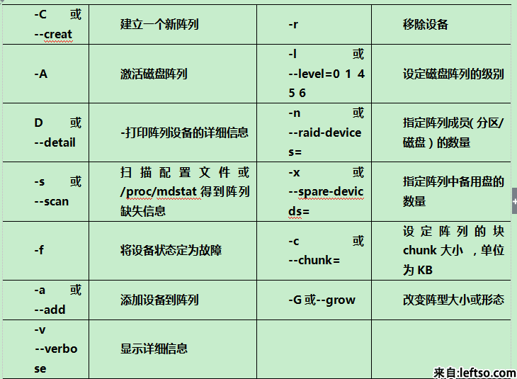

mdadm是linux下用于创建和管理软件RAID的命令，是一个模式化命令。但由于现在服务器一般都带有RAID阵列卡，并且RAID阵列卡也很廉价，且由于软件RAID的自身缺陷（不能用作启动分区、使用CPU实现，降低CPU利用率），因此在生产环境下并不适用。但为了学习和了解RAID原理和管理，因此仍然进行一个详细的讲解：
一、创建模式
选项：-C专用选项：
-l 级别
-n 设备个数
-a {yes|no} 自动为其创建设备文件
-c 指定数据块大小（chunk）
-x 指定空闲盘（热备磁盘）个数，空闲盘（热备磁盘）能在工作盘损坏后自动顶替
注意：创建阵列时，阵列所需磁盘数为-n参数和-x参数的个数和

示例：
前置条件:
- 使用fdisk创建/dev/sdb1 /dev/sdc2分区
- 创建的分区必须是主分区fdisk /dev/sd? 进入后 n然后选择p）
- 设置分区文件类型为fd（fdisk /dev/sd? 进入后 t然后fd）
1、创建raid0：
1.1 创建raid
复制mdadm -C /dev/md0 -a yes -l 0 -n 2 /dev/sdb{1,2}
mdadm -C /dev/md0 -a yes -l 0 -n 2 /dev/sdb1 /dev/sdc2

注意：用于创建raid的磁盘分区类型需为fd
1.2 格式化：
复制mkfs.ext4 /dev/md0
注意：在格式化时，可以指定-E选项下的stride参数指定条带是块大小的多少倍，有在一定程度上提高软RAID性能，如块默认大小为4k，而条带大小默认为64k，则stride为16，这样就避免了RAID每次存取数据时都去计算条带大小，如：
复制mkfs.ext4 -E stride=16 -b 4096 /dev/md0
其中stride=chunk/block，为2的n次方
2、创建raid1：
2.1 创建raid 复制[root@localhost ~]# mdadm -C /dev/md1 -a yes -n 2 -l 1 /dev/sdb{5,6}
mdadm: Note: this array has metadata at the start and
may not be suitable as a boot device. If you plan to
store '/boot' on this device please ensure that
your boot-loader understands md/v1.x metadata, or use
--metadata=0.90
Continue creating array? y
mdadm: Defaulting to version 1.2 metadata
mdadm: array /dev/md1 started.
注意：这个提示是说软raid不能用作启动分区。
2.2 格式化：
复制[root@localhost ~]# mkfs.ext4 /dev/md1
3、创建raid5：
由于没有磁盘空间，我将原来做raid1的测试磁盘全部删除后重新建立四个分区用于raid5测试，分别为sdb5-83.1 创建raid5
复制[root@localhost ~]# mdadm -C /dev/md2 -a yes -l 5 -n 3 /dev/sdb{5,6,7}
mdadm: /dev/sdb5 appears to be part of a raid array:
level=raid1 devices=2 ctime=Sun Jul 14 09:14:25 2013
mdadm: /dev/sdb6 appears to be part of a raid array:
level=raid1 devices=2 ctime=Sun Jul 14 09:14:25 2013
mdadm: /dev/sdb7 appears to be part of a raid array:
level=raid1 devices=2 ctime=Sun Jul 14 09:14:25 2013
Continue creating array? y
mdadm: Defaulting to version 1.2 metadata
mdadm: array /dev/md2 started.
注意：由于我的分区刚才在raid1上使用过，因此有此提示。
3.2 格式化：
复制[root@localhost ~]# mkfs.ext4 /dev/md2
3.3 增加热备磁盘：
复制[root@localhost ~]# mdadm /dev/md2 -a /dev/sdb8
4、查看md状态：
4.1 查看RAID阵列的详细信息：选项： -D = --detail
复制mdadm -D /dev/md# 查看指定RAID设备的详细信息
4.2 查看raid状态
复制[root@localhost ~]# cat /proc/mdstat
Personalities : [raid0] [raid1]
md0 : active raid0 sdb2[1] sdb1[0]
4206592 blocks super 1.2 512k chunks
md1 : active raid1 sdb6[1] sdb5[0]
2103447 blocks super 1.2 [2/2] [UU]
unused devices: <none>
注意：在创建raid前，应该先查看磁盘是否被识别，如果内核还为识别，创建Raid时会报错：
复制cat /proc/partitions
如果没有被识别，可以执行命令：
复制kpartx /dev/sdb或者partprobe/dev/sdb
5.挂载raid到目录
创建一个测试的挂载目录 复制#mkdir /md
挂载上面的raid（这里挂载md0）
复制#mount /dev/md0 /md
设置开机自动挂载
编辑/etc/fstab
复制#vi /etc/fstab
添加下方最后一行
复制#
# /etc/fstab
# Created by anaconda on Tue Apr 10 21:05:33 2018
#
# Accessible filesystems, by reference, are maintained under '/dev/disk'
# See man pages fstab(5), findfs(8), mount(8) and/or blkid(8) for more info
#
UUID=7d9131a9-9b81-4e04-8beb-f6c834e1ac41 / xfs defaults 0 0
UUID=10d14473-dfd4-4a5d-a4e9-bd66117b450c /boot xfs defaults 0 0
UUID=9ad8d627-7699-4b7a-8c70-f03fcc63180e swap swap defaults 0 0
#mount RAID
/dev/md0 /md ext4 defaults 0 0
如果挂载多个就按格式写多个二、管理模式
选项：-a(--add)，-d(--del),-r(--remove),-f(--fail)1、模拟损坏：
复制mdadm /dev/md1 -f /dev/sdb5
2、移除损坏的磁盘：
复制mdadm /dev/md1 -r /dev/sdb5
3、添加新的硬盘到已有阵列：
复制mdadm /dev/md1 -a /dev/sdb7
注意：
3.1、新增加的硬盘需要与原硬盘大小一致
3.2、如果原有阵列缺少工作磁盘（如raid1只有一块在工作，raid5只有2块在工作），这时新增加的磁盘直接变为工作磁盘，如果原有阵列工作正常，则新增加的磁盘为热备磁盘。
4、停止阵列：
选项：-S = --stop
复制mdadm -S /dev/md1
三、监控模式
选项：-F不常用，不做详细说明。
四、增长模式，用于增加磁盘，为阵列扩容：
选项：-G示例，将上述raid5的热备磁盘增加到阵列工作磁盘中
复制[root@localhost ~]# mdadm -G /dev/md2 -n 4
注意：-n 4 表示使用四块工作磁盘
再次使用-D选项查看阵列详细信息如下：
复制[root@localhost ~]# mdadm -D /dev/md2
……此处略掉部分信息……
Number Major Minor RaidDevice State
0 8 21 0 active sync /dev/sdb5
1 8 22 1 active sync /dev/sdb6
3 8 23 2 active sync /dev/sdb7
4 8 24 3 active sync /dev/sdb8
五、装配模式，软RAID是基于系统的，当原系统损坏了，需要重新装配RAID
选项：-A示例：将上述已经停止的阵列重新装配：
复制mdadm -A /dev/md1 /dev/sdb5 /dev/sdb6
实现自动装配：
mdadm运行时会自动检查/etc/mdadm.conf 文件并尝试自动装配，因此第一次配置raid后可以将信息导入到/etc/mdadm.conf 中，命令如下：
复制[root@localhost ~]# mdadm -Ds >/etc/mdadm.conf
六、常见情况操作说明
案例1：
现在有A/B两块硬盘A盘分区情况:
分一个区作为系统分区（sda1）100GB；
分一个区作为raid分区（sdb2）600GB;
B盘分区情况
分一个区作为raid分区（sdb1）600GB
情况①：硬盘B完全损坏
raid恢复方案:
新增一块硬盘大小大于600GB，分一个raid区（假如分区为sdb1）600GB
执行命令:
复制#mdadm /dev/md1 -a /dev/sdb1
执行后就会自动开始同步数据到sdc1模块上。可以通过以下命令查看进度
复制#mdadm -D /dev/md1
复制[root@localhost ~]# mdadm -D /dev/md1
/dev/md1:
Version : 1.2
Creation Time : Thu Jan 25 07:15:06 2018
Raid Level : raid1
Array Size : 629014528 (599.88 GiB 644.11 GB)
Used Dev Size : 629014528 (599.88 GiB 644.11 GB)
Raid Devices : 2
Total Devices : 2
Persistence : Superblock is persistent
Intent Bitmap : Internal
Update Time : Sun May 27 07:04:57 2018
State : clean, degraded, recovering
Active Devices : 1
Working Devices : 2
Failed Devices : 0
Spare Devices : 1
Consistency Policy : unknown
Rebuild Status : 1% complete
Name : localhost.localdomain:1 (local to host localhost.localdomain)
UUID : 401d70fc:1d8675af:2adb9bb4:0b9b37e6
Events : 16931
Number Major Minor RaidDevice State
0 8 33 0 active sync /dev/sdc1
2 8 17 1 spare rebuilding /dev/sdb1
[root@localhost ~]#
等到完全进度100%即可。恢复完成。情况② 硬盘A完全坏掉
注意：系统也在A盘的分区中。所以只能新增一块硬盘，并且新装一个系统。在装好系统后检查mdadm是否安装。如果没有安装则安装该软件。
安装完成后将硬盘B插入系统中。此时在/dev/目录下就可以看到md1的raid盘。通过mdadm -D命令查看可以看到是一个降级的raid。这里只要再从新装的盘中分一个区或者再加一块硬盘分一个区进行重组即可。重组步骤
1>新建一个raid分区（600G）
2>执行命令添加热备盘即可 mdadm /dev/md1 -a /dev/sd?1
评论区域
暂无评论,快来抢首发吧！！！